Scale & Code
旋法について
教会旋法
教会楽の音階です。
教会楽は長い歴史があり、ルネサンス音楽期（15～16世紀）までは第１旋法～第８旋法の８つの音階がカトリック教会によって認められていました。
しかし、次第に調性音楽（長調や短調の音楽）にとってかわってゆき、カトリック教会も16世紀になって第９旋法～第12旋法の４つの音階を認めます。
また、この頃に、当時の音楽理論家によって旋法の名称が確立されたようです。
この頃から、調整を確立するために、次第に第１旋法～第８旋法は淘汰されてゆきます。
バロック音楽期（17世紀）になると、この12の旋法のうち、西洋和声と親和性が高かった
第９旋法のイオニア旋法が「長調」、第11旋法のエオリア旋法が「短調」として残ります。
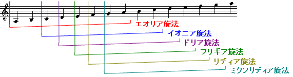
| 旋法 | 楽譜 | 旋法 | 楽譜 | ||
|---|---|---|---|---|---|
| 第１旋法 | ドリア |  | 第２旋法 | ヒポドリア | 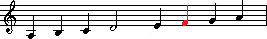 |
| 第３旋法 | フリギア |  | 第４旋法 | ヒポフリギア |  |
| 第５旋法 | リディア | 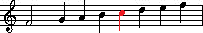 | 第６旋法 | ヒポリディア | 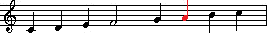 |
| 第７旋法 | ミクソリディア |  | 第８旋法 | ヒポミクソリディア |  |
| 第９旋法 | エオリア | 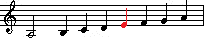 | 第10旋法 | ヒポエオリア |  |
| 第11旋法 | イオニア |  | 第12旋法 | ヒポイオニア | 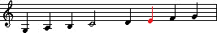 |
※楽譜について。
白玉は終止音をしめします。終止音とは主音のようなもので、旋律はこの音を中心に動き、この音で終わります。
赤い音符は支配音（ドミナント）を示します。支配音とは終始音に次いで重要な音で、曲の中で繰り返し現れ、旋律を特性付けます。
モード
１９６０年代頃から、主にJazzで長調、短調からの脱却で、再び教会旋法が利用されるようになってきました。
また、旋律的短音階、和声的短音階のスケールを回転した、新しいモードも使われます。
また、教会旋法では無かったことにされたロクリア旋法も使われます。
モードは、長調、短調からの脱却なので、この考え方は良いのか不明ですが、
大まかには、長調系のスケールか、短調系のスケールかはⅲの音で判断できます。
♭がついてない場合は長調系、♭がつく場合は短調系のスケールです。
| 旋法 | 楽譜 （※２小節目は、Ｃ調（ハ調）に移調した場合のスケールを記した。） | 備考 |
|---|---|---|
| エオリア旋法 | 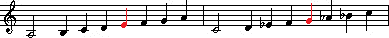 | 現在の短調に相当。 |
| ロクリア旋法 |  | （教会旋法では、無い事にされた旋法。 後にロクリア旋法として作られました。） |
| イオニア旋法 | 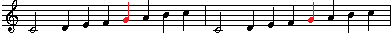 | 現在の長調に相当。 |
| ドリア旋法 | 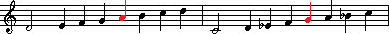 | 平穏、静寂、厳粛、優雅。 |
| フリギア旋法 |  | 甘美、神聖、恍惚、永遠。 |
| リディア旋法 | 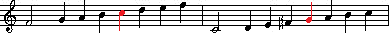 | 流麗、端然、確固。 |
| ミクソリディア旋法 | 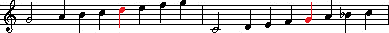 | 明快、熱烈、感動。 |
古典和声（西洋和声）について
音楽理論（ポピューラ和声）の基礎は、古典和声にあります。
ここでは、ごく初歩しか解説していませんので、より詳細は、「和声」や「コード進行」の参考書などをご参照ください。
また、「対位法」もお勧めします。
コード名は、Ⅰ～Ⅶのローマ数字で記述します。
ハ長調の場合、ハ長調（Ｃ-Dur）の時は、ⅠをＣ、ⅡをＤ、…、ⅦをＢと読み替えます。
【1】コードの機能
コードには、大きく分けると３つの役割があります。
トニック（トニカ）
Ⅰの和音です。（代理和音としてⅥ）
和声の中心となるコードで、その調の主役です。
強い安定性を持つ和音で、「落ち着き」、「解放」、「解決」といった印象が得られます。
多くの曲はコードで始まりこのコードで終わります。
トニックは、サブドミナント、ドミナントの両方へ進行できます。
ドミナント
Ⅴの和音です。
トニックの５度上の和音で、属音（Ⅴ：ハ長調の場合Ｇ）が根の音にあります。
トニックとは対照的に、「緊張」した印象が得られます。
不安定な和音でこの和音はトニックに進行したがる性質を持ちます。
そのように、ドミナントからトニックへ進行することを「解決」と呼び、
Ⅴの和音からⅠの和音への進行を「全終始」と呼びます。
Ⅴの変わりに、Ⅴ7やⅤ9の和音も良く使われます。
ドミナントは、トニックへのみ進行できます。
サブドミナント
Ⅳの和音です。（代理和音としてⅡ）
トニックの４度上（５度下）の和音です。
ドミナントより強くはないが、同様に「緊張」した印象が得られます。
この和音は、ドミナントに進行するか、トニックに進行します。
教会音楽などでは、Ⅰ（トニック）→Ⅳ（サブドミナント）→Ⅰ（トニック）といった進行（アーメン進行と呼ばれる）がよく使われ、
Ⅳ→Ⅰへの進行は、「変終止」と呼ばれます。
サブドミナントは、ドミナント、トニックの両方へ進行できます。
Ⅱの和音はドッペルドミナントとも呼ばれ、ドミナントへのドミナントです。
Ⅳは、Ⅱ（ドッペルドミナント）の代理和音という考え方もあります。
Ⅴ（ドミナント）→Ⅰ（トニック）への進行が４度上（５度下）に進行するものに対し、
Ⅱ（ドッペルドミナント）→Ⅴ（ドミナント）も４度上（５度下）に進行します。
Ⅱ（ドッペルドミナント）はⅤ（ドミナント）へのみ進行できます。
【2】カデンツとコードの進行
和声は、トニックに戻ることでひと段落がつきます。
このトニックから始まってトニックで終わるまでの進行をカデンツと呼びます。
カデンツは、大きく分けると、以下の３通りになります。
- トニック → ドミナント → トニック
- トニック → サブドミナント → トニック
- トニック → サブドミナント → ドミナント → トニック
基本的なコード進行まとめ
ⅢやⅦは難しいので、専門書をご参照ください。
- Ⅰは、どこにでも進行できます。
- Ⅱは、Ⅴへのみに行けます。
- Ⅳは、ⅠかⅡかⅤに進行できます。
- Ⅴは、ⅠかⅥ（トニック）に行けます
- Ⅵ（トニック）は、Ⅰ以外へ進行できます。
※あえて、この法則に逆らい、独特な効果を狙う音楽も存在します。
スケールとコードの関係表
各スケール時に、どのコードになるのかの一覧表です。
ローマ数字はコード名を意味します。
scale()コマンドを使う事で、
臨時記号を書かずにこれらの複雑な和声（和音）を簡単に使う事ができます。
そして、音楽理論を知らなくても、その和音に辻褄の合う旋律が書けます。
（※但し、各トラックで違うスケールに設定したり、臨時記号をつけると、もちろんダメです。）
すると、プロの作曲家っぽい曲が作れるかもしれません！
例えば、ハ短調において、Ⅰ→Ⅵ→Ⅱ→Ⅴ→Ⅰの進行をするとします。
この時、ダイアトニックコードのみを使う場合、
「Ｃm→♭Ａ→Ｄm(♭-5)→Ｇm→Ｃm」となります。
ここで、Ⅵをメロディックマイナーから、Ⅴをハーモニックマイナーから借用し、
ドミナントであるＶと、ＶのドッペルドミナントであるⅡ、としてⅥ→ⅡをⅡm→Ｖ分割と捉えⅥもセブンスにすると、
「Ｃm→Ａm7(♭-5)→Ｄm7(♭-5)→Ｇ7→Ｃm」となります。
チャーチモード
Ｃイオニアン・モード（ハ長調）におけるダイアトニックコードは、以下の通りです。
チャーチモードは、これがローテートした形になります。
《C Ionian Mode （C-Dur ／ ハ長調）》
 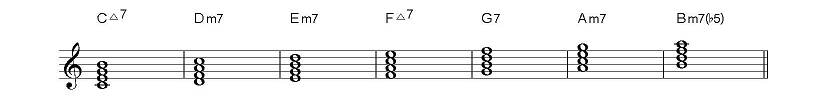
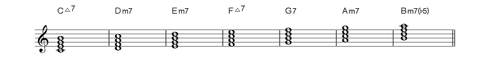
例えば、Ｃエオリアンモード（ハ短調）は、以下の通りです。
イオニアンモードのⅥの時の和音が、エオリアンモードではⅠの和音、
イオニアンモードのⅦの時の和音が、エオリアンモードではⅡの和音、…
となります。
《C Aeolian Mode （c-moll ／ ハ短調）》


各モードの和音をまとめると、以下の通りです。
sus4系は割愛します。
| Scale name | Number | Ⅰ | Ⅱ | Ⅲ | Ⅳ | Ⅴ | Ⅵ | Ⅶ |
|---|---|---|---|---|---|---|---|---|
| Ionian （長音階） | 0 | Ⅰ | Ⅱm | Ⅲm | Ⅳ | Ⅴ | Ⅵm | Ⅶm(♭5) |
| Dorian | 1 | Ⅰm | Ⅱm | ♭Ⅲ | Ⅳ | Ⅴm | Ⅵm(♭5) | ♭Ⅶ |
| Phrygian | 2 | Ⅰm | ♭Ⅱ | ♭Ⅲ | Ⅳm | Ⅴm(♭5) | ♭Ⅵ | ♭Ⅶm |
| Lydian | 3 | Ⅰ | Ⅱ | Ⅲm | ＃Ⅳm(♭5) | Ⅴ | Ⅵm | Ⅶm |
| Mixo-Lydian | 4 | Ⅰ | Ⅱm | Ⅲm(♭5) | Ⅳ | Ⅴm | Ⅵm | ♭Ⅶ |
| Aeolian （自然短音階） | 5 | Ⅰm | Ⅱm(♭5) | ♭Ⅲ | Ⅳm | Ⅴm | ♭Ⅵ | ♭Ⅶ |
| Locrian | 6 | Ⅰm(♭5) | ♭Ⅱ | ♭Ⅲm | Ⅳm | ♭Ⅴ | ♭Ⅵ | ♭Ⅶm |
| Scale name | Number | Ⅰ | Ⅱ | Ⅲ | Ⅳ | Ⅴ | Ⅵ | Ⅶ |
|---|---|---|---|---|---|---|---|---|
| Ionian （長音階） | 0 | Ⅰmaj7 | Ⅱm7 | Ⅲm7 | Ⅳmaj7 | Ⅴ7 | Ⅵm7 | Ⅶm7(♭5) |
| Dorian | 1 | Ⅰm7 | Ⅱm7 | ♭Ⅲmaj7 | Ⅳ7 | Ⅴm7 | Ⅵm7(♭5) | ♭Ⅶmaj7 |
| Phrygian | 2 | Ⅰm7 | ♭Ⅱmaj7 | ♭Ⅲ7 | Ⅳm7 | Ⅴm7(♭5) | ♭Ⅵmaj7 | ♭Ⅶm7 |
| Lydian | 3 | Ⅰmaj7 | Ⅱ7 | Ⅲm7 | ＃Ⅳm7(♭5) | Ⅴmaj7 | Ⅵm7 | Ⅶm7 |
| Mixo-Lydian | 4 | Ⅰ7 | Ⅱm7 | Ⅲm7(♭5) | Ⅳmaj7 | Ⅴm7 | Ⅵm7 | ♭Ⅶmaj7 |
| Aeolian （自然短音階） | 5 | Ⅰm7 | Ⅱm7(♭5) | ♭Ⅲmaj7 | Ⅳm7 | Ⅴm7 | ♭Ⅵmaj7 | ♭Ⅶ7 |
| Locrian | 6 | Ⅰm7(♭5) | ♭Ⅱmaj7 | ♭Ⅲm7 | Ⅳm7 | ♭Ⅴmaj7 | ♭Ⅵ7 | ♭Ⅶm7 |
和声的短音階から派生するモード
和声的短音階についても、同様にローテートして、様々なモードを作ることができます。
《C Harmonic Minor Mode ／ ハ短調における和声的短音階）


| Scale name | Number | Ⅰ | Ⅱ | Ⅲ | Ⅳ | Ⅴ | Ⅵ | Ⅶ |
|---|---|---|---|---|---|---|---|---|
| Harmonic minor （和声的短音階） | 10 | Ⅰm | Ⅱm(♭5) | ♭Ⅲaug | Ⅳm | Ⅴ | ♭Ⅵ | Ⅶm(♭5) |
| Locrian natural13 | 11 | Ⅰm(♭5) | ♭Ⅱaug | ♭Ⅲm | Ⅳ | ♭Ⅴ | Ⅵm(♭5) | ♭Ⅶm |
| Ionian ＃5 | 12 | Ⅰaug | Ⅱm | Ⅲ | Ⅳ | ＃Ⅴm(♭5) | Ⅵm | Ⅶm(♭5) |
| Dorian ＃11 | 13 | Ⅰm | Ⅱ | ♭Ⅲ | ＃Ⅳm(♭5) | Ⅴm | Ⅵm(♭5) | ♭Ⅶaug |
| Harmonic minor perfect 5th below | 14 | Ⅰ | ♭Ⅱ | Ⅲm(♭5) | Ⅳm | Ⅴm(♭5) | ♭Ⅵaug | ♭Ⅶm |
| Lydian ＃9 | 15 | Ⅰ | ＃Ⅱm(♭5) | Ⅲm | ＃Ⅳm(♭5) | Ⅴaug | Ⅵm | Ⅶ |
| Altered ♭7 | 16 | Ⅰm(♭5) | ♭Ⅱm | ♭Ⅲm(♭5) | ♭Ⅳaug | ♭Ⅴm | ♭Ⅵ | ♭♭Ⅶ |
| Scale name | Number | Ⅰ | Ⅱ | Ⅲ | Ⅳ | Ⅴ | Ⅵ | Ⅶ |
|---|---|---|---|---|---|---|---|---|
| Harmonic minor （和声的短音階） | 10 | Ⅰmmaj7 | Ⅱm7(♭5) | ♭Ⅲmaj7(♯5) | Ⅳm7 | Ⅴ7 | ♭Ⅵmaj7 | Ⅶdim |
| Locrian natural13 | 11 | Ⅰm7(♭5) | ♭Ⅱmaj7(♯5) | ♭Ⅲm7 | Ⅳ7 | ♭Ⅴmaj7 | Ⅵdim | ♭Ⅶmmaj7 |
| Ionian ＃5 | 12 | Ⅰmaj7(♯5) | Ⅱm7 | Ⅲ7 | Ⅳmaj7 | ＃Ⅴdim | Ⅵmmaj7 | Ⅶm7(♭5) |
| Dorian ＃11 | 13 | Ⅰm7 | Ⅱ7 | ♭Ⅲmaj7 | ＃Ⅳdim | Ⅴmmaj7 | Ⅵm7(♭5) | ♭Ⅶmaj7(♯5) |
| Harmonic minor perfect 5th below | 14 | Ⅰ7 | ♭Ⅱmaj7 | Ⅲdim | Ⅳmmaj7 | Ⅴm7(♭5) | ♭Ⅵmaj7(♯5) | ♭Ⅶm7 |
| Lydian ＃9 | 15 | Ⅰmaj7 | ＃Ⅱdim | Ⅲmmaj7 | ＃Ⅳm7(♭5) | Ⅴmaj7(♯5) | Ⅵm7 | Ⅶ7 |
| Altered ♭7 | 16 | Ⅰdim | ♭Ⅱmmaj7 | ♭Ⅲm7(♭5) | ♭Ⅳmaj7(♯5) | ♭Ⅴm7 | ♭Ⅵ7 | ♭♭Ⅶmaj7 |
旋律的短音階から派生するモード
旋律的短音階についても、同様にローテートして、様々なモードを作ることができます。
《C Melodic Minor Mode ／ ハ短調における旋律的短音階）
 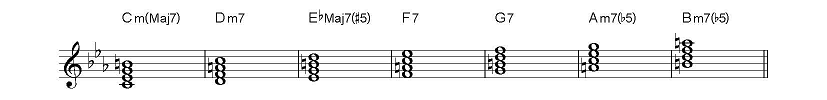
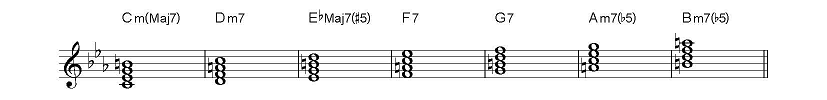
| Scale name | Number | Ⅰ | Ⅱ | Ⅲ | Ⅳ | Ⅴ | Ⅵ | Ⅶ |
|---|---|---|---|---|---|---|---|---|
| Melodic minor （旋律的短音階） | 20 | Ⅰm | Ⅱm | ♭Ⅲaug | Ⅳ | Ⅴ | Ⅵm(♭5) | Ⅶm(♭5) |
| Dorian ♭9 | 21 | Ⅰm | ♭Ⅱaug | ♭Ⅲ | Ⅳ | Ⅴm(♭5) | Ⅵm(♭5) | ♭Ⅶm |
| Lydian ＃5 |
22 | Ⅰaug | Ⅱ | Ⅲ | ＃Ⅳm(♭5) | ＃Ⅴm(♭5) | Ⅵm | Ⅶm |
| Mixo-Lydian ＃11 (Lydian ♭7) | 23 | Ⅰ | Ⅱ | Ⅲm(♭5) | ＃Ⅳm(♭5) | Ⅴm | Ⅵm | ♭Ⅶaug |
| Mixo-Lydian ♭13 |
24 | Ⅰ | Ⅱm(♭5) | Ⅲm(♭5) | Ⅳm | Ⅴm | ♭Ⅵaug | ♭Ⅶ7 |
| Aeolian ♭5 (Super Locrian) |
25 | Ⅰm(♭5) | Ⅱm(♭5) | ♭Ⅲm | Ⅳm | ♭Ⅴaug | ♭Ⅵ | ♭Ⅶ |
| Altered |
26 | Ⅰm(♭5) | ♭Ⅱm | ♭Ⅲm | ♭Ⅳaug | ♭Ⅴ | ♭Ⅵ | ♭Ⅶm(♭5) |
| Scale name | Number | Ⅰ | Ⅱ | Ⅲ | Ⅳ | Ⅴ | Ⅵ | Ⅶ |
|---|---|---|---|---|---|---|---|---|
| Melodic minor （旋律的短音階） | 20 | Ⅰmmaj7 | Ⅱm7 | ♭Ⅲmaj7(♯5) | Ⅳ7 | Ⅴ7 | Ⅵm7(♭5) | Ⅶm7(♭5) |
| Dorian ♭9 | 21 | Ⅰm7 | ♭Ⅱmaj7(♯5) | ♭Ⅲ7 | Ⅳ7 | Ⅴm7(♭5) | Ⅵm7(♭5) | ♭Ⅶmmaj7 |
| Lydian ＃5 |
22 | Ⅰmaj7(♯5) | Ⅱ7 | Ⅲ7 | ＃Ⅳm7(♭5) | ＃Ⅴm7(♭5) | Ⅵmmaj7 | Ⅶm7 |
| Mixo-Lydian ＃11 (Lydian ♭7) | 23 | Ⅰ7 | Ⅱ7 | ＃Ⅲm7(♭5) | Ⅳm7(♭5) | Ⅴmmaj7 | Ⅵm7 | ♭Ⅶmaj7(♯5) |
| Mixo-Lydian ♭13 |
24 | Ⅰ7 | Ⅱm7(♭5) | Ⅲm7(♭5) | Ⅳmmaj7 | Ⅴm7 | ♭Ⅵmaj7(♯5) | ♭Ⅶ7 |
| Aeolian ♭5 (Super Locrian) |
25 | Ⅰm7(♭5) | Ⅱm7(♭5) | ♭Ⅲmmaj7 | Ⅳm7 | ♭Ⅴmaj7(♯5) | ♭Ⅵ7 | ♭Ⅶ7 |
| Altered |
26 | Ⅰm7(♭5) | ♭Ⅱmmaj7 | ♭Ⅲm7 | ♭Ⅳmaj7(♯5) | ♭Ⅴ7 | ♭Ⅵ7 | ♭Ⅶm7(♭5) |
コードとスケールの関係表
コードと、そのコードにて使用可能なスケールです。
| m | m(♭5) | aug | |||||
|---|---|---|---|---|---|---|---|
| 7 | maj7 | m7 | mmaj7 | m7(♭5) | dim7 | maj7(♯5) | |
| Ⅰ（Ｃ） | Mixo-Lydian Mixo-Lydian ＃11 (Lydian ♭7) Mixo-Lydian ♭13 Harmonic minor perfect 5th below |
Ionian Lydian Lydian ＃9 |
Aeolian Dorian Dorian ＃11 Dorian ♭9 Phrygian |
Harmonic minor Melodic minor |
Locrian Locrian natural13 Aeolian ♭5 (Super Locrian) Altered |
Altered ♭7 | Ionian ＃5 Lydian ＃5 |
| ♭Ⅱ（♭Ｄ） | Phrygian Locrian Harmonic minor perfect 5th below |
Altered Altered ♭7 |
Locrian natural13 Dorian ♭9 |
||||
| Ⅱ（Ｄ） | Lydian Dorian ＃11 Lydian ＃5 Mixo-Lydian ＃11 (Lydian ♭7) |
Ionian Dorian Mixo-Lydian Ionian ＃5 Melodic minor |
Aeolian Harmonic minor Mixo-Lydian ♭13 Aeolian ♭5 (Super Locrian) |
||||
| ＃Ⅱ（＃Ｄ） | Lydian ＃9 | ||||||
| ♭Ⅲ（♭Ｅ） | Phrygian Dorian ♭9 |
Dorian Dorian ＃11 Aeolian |
Locrian Locrian natural13 Altered |
Aeolian ♭5 (Super Locrian) | Altered ♭7 | Harmonic minor Melodic minor |
|
| Ⅲ（Ｅ） | Ionian ＃5 Lydian ＃5 |
Ionian Lydian |
Lydian ＃9 | Mixo-Lydian Mixo-Lydian ♭13 |
Harmonic minor perfect 5th below | ||
| ＃Ⅲ（＃Ｅ） | Mixo-Lydian ＃11 (Lydian ♭7) | ||||||
| ♭Ⅳ（♭Ｆ） | Altered Altered ♭7 |
||||||
| Ⅳ（Ｆ） | Dorian Locrian natural13 Melodic minor Dorian ♭9 |
Ionian Ionian ＃5 Mixo-Lydian |
Phrygian Aeolian Locrian Harmonic minor Aeolian ♭5 (Super Locrian) |
Harmonic minor perfect 5th below Mixo-Lydian ♭13 |
Mixo-Lydian ＃11 (Lydian ♭7) | ||
| ＃Ⅳ（＃Ｆ） | Lydian Lydian ＃5 Lydian ＃9 |
Dorian ＃11 | |||||
| ♭Ⅴ（♭Ｇ） | Altered | Locrian Locrian natural13 |
Altered ♭7 | Aeolian ♭5 (Super Locrian) | |||
| Ⅴ（Ｇ） | Ionian Harmonic minor Melodic minor |
Lydian | Dorian Aeolian Mixo-Lydian Mixo-Lydian ♭13 |
Dorian ＃11 Mixo-Lydian ＃11 (Lydian ♭7) |
Phrygian Harmonic minor perfect 5th below Dorian ♭9 |
Lydian ＃9 | |
| ＃Ⅴ（＃Ｇ） | Lydian ＃5 | Ionian ＃5 | |||||
| ♭Ⅵ（♭Ａ） | Locrian Aeolian ♭5 (Super Locrian) Altered ♭7 Altered |
Phrygian Aeolian Harmonic minor |
Harmonic minor perfect 5th below Mixo-Lydian ♭13 |
||||
| Ⅵ（Ａ） | Ionian Lydian Mixo-Lydian Lydian ＃9 Mixo-Lydian ＃11 (Lydian ♭7) |
Ionian ＃5 Lydian ＃5 |
Dorian Dorian ＃11 Dorian ♭9 Melodic minor |
Locrian natural13 | |||
| ♭♭Ⅶ（♭♭Ｂ） | Altered ♭7 | ||||||
| ♭Ⅶ（♭Ｂ） | Mixo-Lydian
♭13 Aeolian Aeolian ♭5 (Super Locrian) |
Dorian Mixo-Lydian |
Phrygian Locrian Harmonic minor perfect 5th below |
Locrian natural13 Dorian ♭9 |
Altered | Dorian ＃11 Mixo-Lydian ＃11 (Lydian ♭7) |
|
| Ⅶ（Ｂ） | Lydian ＃9 | Lydian Lydian ＃5 |
Ionian Ionian ＃5 Melodic minor |
Harmonic minor | |||